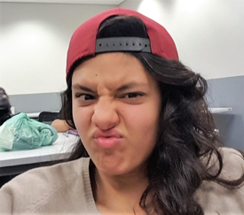

Nome

Sabrina
Estudante de Engenharia da Computação
"É bastante produtiva, consegue descontrair o ambiente de trabalho e sem perder o perder proissionalismo, não tem medo de arriscar algo diferente e é bastante independente."
- Phelipe Müller
"É profissional e boa no que faz, além de contribuir para tornar o ambiente de trabalho especialmente motivador."
- Giulia Passarelli
e-mail: sbrnmchd@gmail.com